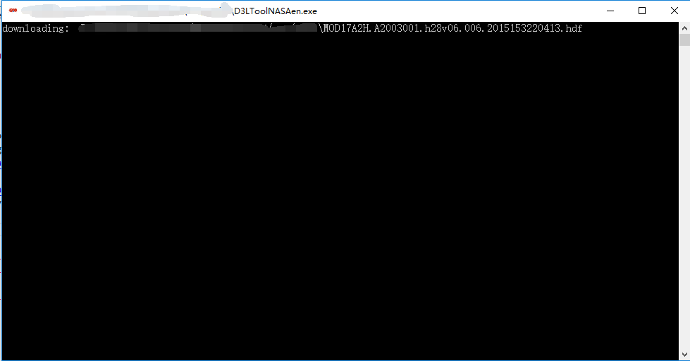

NASA卫星的D3L工具用户指南
戴先生目前正在编写NASA卫星的D3L工具用户指南的更新版本。 软件和用户指南将继续根据使用者建议进行修改。
主界面

双击D3LToolNASA.exe。
1 功能菜单
点击功能菜单。程序官网是打开D3L Tool of NASA Satellite的官网。百度网盘链接提供了另一个下载方式。NASA官网则会在浏览器里打开NASA卫星（'https://ladsweb.modaps.eosdis.nasa.gov/'）的网站。 NASA工具箱是NASA官方提供的一些工具和服务。
2 遥感资源
点击遥感资源。这是一个笔者整理的一些遥感资源清单。
3 作者博客
点击作者博客。这样会在你的浏览器里打开我的博客。
4 关于软件
点击关于软件。提供一些关于软件的信息。
5 打赏
点击打赏。即可打赏软件作者。
下载NASA卫星影像
1 谷歌浏览器
首先, 你的电脑里必须安装了谷歌浏览器，你才能使用这个下载功能。

其次, 你必须有一个NASA Earthdata的账户。根据你的账户填写用户名和密码。

你可以获取你订单的ID号。而这里的下载路径主要是用来存储你所下载数据的清单，但是无法将NASA卫星影像下载到该路径下。如果你想改变数据存储的路径，请在你的谷歌浏览器里进行设置。
最后，你只要点击下载就可以开始你的数据下载了。


D3LToolNASA.exe会打开一个谷歌浏览器并且下载数据。
2 NASA脚本
我已经将laads-download-data.py打包成一个叫做nasa.exe的可执行文件。如果你对命令行非常熟悉的话，你可以直接用nasa.exe和CMD来下载NASA卫星影像.
首先, 你必须有一个NASA Earthdata的应用密钥。

然后，你必须获取到你的订单的url路径。
最后，你只需要点击下载，等待数据下载完成即可。

D3LToolNASA.exe即将下载数据。